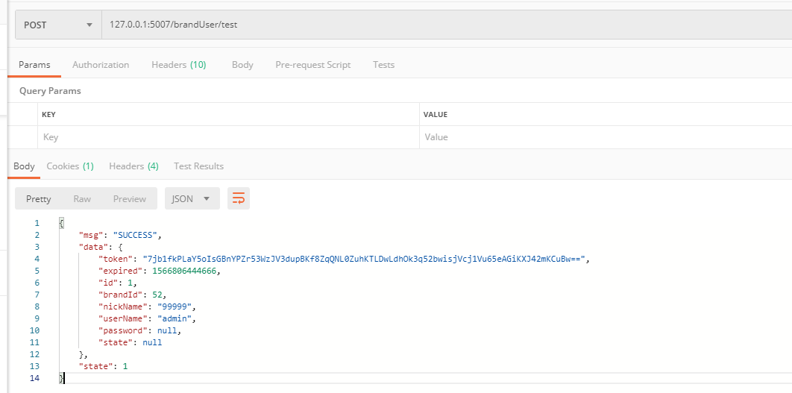
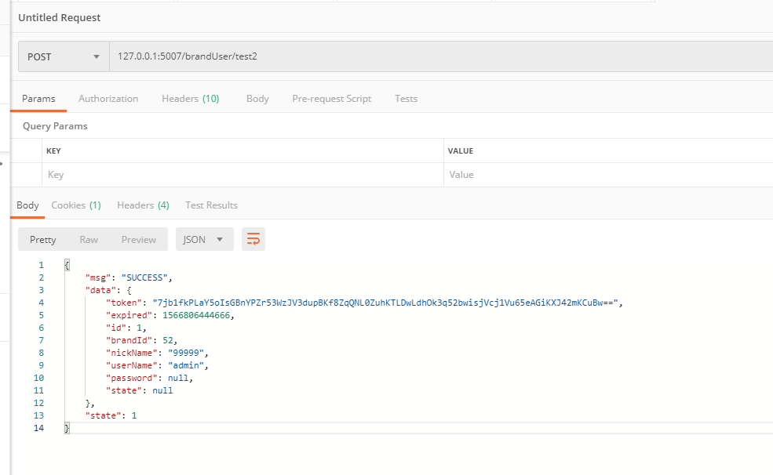

1、新建用户对象封装的实体类
*
* 主体类
* wmy 13:20 2019/8/15
* @Param
* @return
**/
public class Subject {
private Object bean;
private String token;
private Date expired;
public String getToken() {
return token;
}
public void setToken(String token) {
this.token = token;
}
public Date getExpired() {
return expired;
}
public void setExpired(Date expired) {
this.expired = expired;
}
public Object getBean() {
return bean;
}
public void setBean(Object bean) {
this.bean = bean;
}
@Override
public String toString() {
return "Subject{" +
"bean=" + bean +
", token='" + token + '\'' +
", expired=" + expired +
'}';
}
}2、使用单例模式创建用户对象的容器
@Bean("tokens")
public Map<String, Subject> getTokens() {
Map<String, Subject> tokens = new HashMap<>();
return tokens;
}3、封装成用户对象操作的工具类
@Component
public class SubjectUtil implements BeanFactoryAware {
private static BeanFactory beanFactory = null;
private static String token = null;
public static String getToken() {
return token;
}
public static void setToken(String token) {
SubjectUtil.token = token;
}
@Override
public void setBeanFactory(BeanFactory beanFactory) throws BeansException {
SubjectUtil.beanFactory = beanFactory;
}
public static BeanFactory getBeanFactory() {
return beanFactory;
}
/*
* 获得当前用户id
* wmy 15:29 2019/8/19
* @Param []
* @return java.lang.Integer
**/
public static Integer getSubjectID() {
return SubjectUtil.getBean(token,BrandUserR.class).getId();
}
/*
* 厂商id
* wmy 9:44 2019/8/26
* @Param []
* @return java.lang.Integer
**/
public static Integer getBrandID() {
return SubjectUtil.getBean(token,BrandUserR.class).getBrandId();
}
/*
* 获得在线用户封装
**/
public static Subject getSubject(String token) {
Map<String, Subject> beans = (Map<String, Subject>) beanFactory.getBean("tokens");
return beans.get(token);
}
/*
* 获得在线用户
**/
public static Object getBean(String token) {
Map<String, Subject> beans = (Map<String, Subject>) beanFactory.getBean("tokens");
Subject subject = beans.get(token);
if (subject != null) {
return subject.getBean();
}
return null;
}
//获得在线用户
public static final <T> T getBean(String token, Class<T> clazz) {
Map<String, Subject> beans = (Map<String, Subject>) beanFactory.getBean("tokens");
Subject subject = beans.get(token);
if (subject != null) {
Object bean = subject.getBean();
if (clazz.isInstance(bean)) {
return clazz.cast(bean);
}
}
return null;
}
/*
* 添加在线用户
**/
public static void addTokenBean(String token, Object bean, Date expired) {
Object beans = beanFactory.getBean("tokens");
if (beans != null && beans instanceof Map) {
Map<String, Subject> map = (Map<String, Subject>) beans;
if (!map.containsKey(token)) {
Subject subject = new Subject();
subject.setBean(bean);
subject.setExpired(expired);
subject.setToken(token);
map.put(token, subject);
}
}
}
/*
* 删除用户
**/
public static void removeTokenBean(String token) {
Map<String, Subject> beans = (Map<String, Subject>) beanFactory.getBean("tokens");
beans.remove(token);
}
/*
* 获得所有在线用户
* wmy 10:53 2019/8/19
* @Param []
* @return java.util.Map<java.lang.String,com.raise3d.config.Subject>
**/
public static Map<String, Subject> getBeans() {
Object beans = beanFactory.getBean("tokens");
if (beans != null && beans instanceof Map) {
Map<String, Subject> map = (Map<String, Subject>) beans;
return map;
}
return null;
}
/*
* 清楚所有用户
* wmy 13:02 2019/8/19
* @Param []
* @return void
**/
public static void clear() {
Object beans = beanFactory.getBean("tokens");
if (beans != null && beans instanceof Map) {
Map<String, Subject> map = (Map<String, Subject>) beans;
map.clear();
}
}
}4、拦截器的实现
/*
* 登录拦截器
* wmy 14:02 2019/8/19
* @Param
* @return
**/
public class LoginInterceptor implements HandlerInterceptor {
@Override
public boolean preHandle(HttpServletRequest request, HttpServletResponse response, Object handler) throws Exception {
if (!request.getMethod().equals("OPTIONS")) {
String token = request.getHeader("Authorization");
int verify = verify(token);
if (verify == 0) {
PrintWriter writer = response.getWriter();
writer.write(Config.MSG_ACCESS_DENIED);
return false;
} else if (verify == 2) {
PrintWriter writer = response.getWriter();
writer.write(Config.MSG_ACCESS_EXPIRED);
return false;
} else if (SubjectUtil.getToken() == null) {
PrintWriter writer = response.getWriter();
writer.write(Config.MSG_ACCESS_DENIED);
return false;
}
}
return true;
}
@Override
public void postHandle(HttpServletRequest request, HttpServletResponse response, Object handler, ModelAndView modelAndView) throws Exception {
}
@Override
public void afterCompletion(HttpServletRequest request, HttpServletResponse response, Object handler, Exception ex) throws Exception {
SubjectUtil.setToken(null);
}
/*
* 认证方法
* wmy 11:29 2019/8/15
* @Param [token]
* @return java.lang.Boolean
**/
public synchronized int verify(String token) {
if (token != null) try {
Subject subject = SubjectUtil.getSubject(token);
if (subject != null) {
//判断是否过期
if (subject.getExpired().getTime() + Config.MSG_EXPIRED < System.currentTimeMillis()) {
return 2;
} else {
if (!token.equals(SubjectUtil.getToken())) {
while (true) {
if (SubjectUtil.getToken() == null) {
SubjectUtil.setToken(token);
return 1;
}
System.out.println("********** token切换中 *********");
}
}
return 1;
}
}
} catch (Exception e) {
e.printStackTrace();
}
return 0;
}
}5、把拦截器注入岛spring容器中，配置跨域，使用spring定时器，定时清除过期用户
@Configuration
@EnableScheduling
public class WebMvcConfig extends WebMvcConfigurerAdapter {
@Override
public void addInterceptors(InterceptorRegistry registry) {
registry.addInterceptor(new LoginInterceptor()).addPathPatterns("/**").excludePathPatterns("/brandUser/login");
}
@Override
public void addCorsMappings(CorsRegistry registry) {
registry.addMapping("/**").allowedOrigins("*");
}
@Bean("tokens")
public Map<String, Subject> getTokens() {
Map<String, Subject> tokens = new HashMap<>();
return tokens;
}
@Scheduled(fixedDelay = 2 * 60 * 60 * 1000)//两个小时执行一次
private void expiredTokens() {
Map<String, Subject> beans = SubjectUtil.getBeans();
Set<String> tokens = new HashSet<>();
if (beans.size() > 0) {
for (String key : beans.keySet()) {
if (beans.get(key).getExpired().getTime() + Config.MSG_EXPIRED < System.currentTimeMillis()) {
tokens.add(key);
}
}
if (tokens.size() > 0) {
tokens.stream().forEach(token -> SubjectUtil.removeTokenBean(token));
}
}
}
}6、测试
@PostMapping("/test")
public Result test() {
String token = SubjectUtil.getToken();
BrandUserR bean = SubjectUtil.getBean(token, BrandUserR.class);
return Result.ok(bean);
}
@PostMapping("/test2")
public Result test2() {
//SubjectUtil.clear();
return Result.ok(SubjectUtil.getBean(SubjectUtil.getToken()));
}

未做压力测试，适合做后台管理系统使用，并发高的项目慎用。